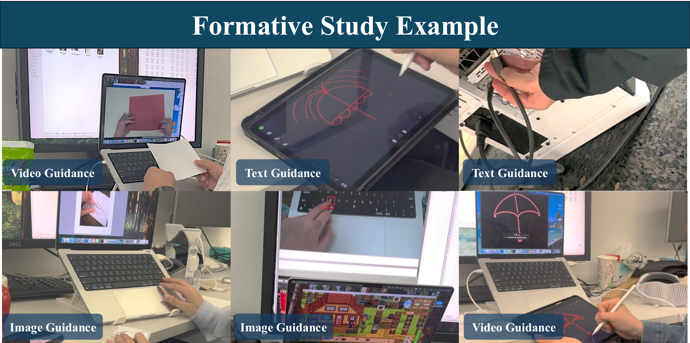
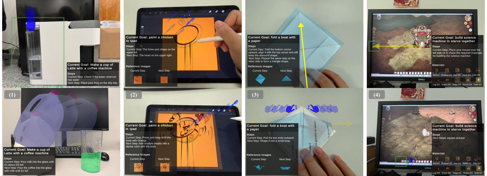

JARVIS: A Just-in-Time Augmented Reality VLM-Powered Instruction System for Cross-Reality Task Guidance
arXiv Preprint, 2026
Abstract
Many everyday tasks rely on external tutorials such as manuals and videos, requiring users to constantly switch between reading instructions and performing actions, which disrupts workflow and increases cognitive load. Augmented reality (AR) enables in-situ guidance, while recent advances in large language models (LLMs) and vision-language models (VLMs) make it possible to automatically generate such guidance. However, existing AI-powered AR tutorial systems primarily focus on physical procedural tasks and provide limited support for hybrid physical and virtual workspaces. To address this gap, we conduct a formative study of cross-reality tasks and identify key requirements for state awareness and cross-reality coordination. We present JARVIS, a VLM-driven AR instruction system that generates contextual, step-by-step guidance from a single prompt, with real-time state verification and adaptive visual feedback. To inform the system design, we conducted a formative study to understand guidance needs across cross-reality tasks, which we categorize into four types: real-to-real (R2R), real-to-virtual (R2V), virtual-to-real (V2R), and virtual-to-virtual (V2V). A within-subjects study (N=14) across four domains shows JARVIS improves usability, workload, success rate, and visualization effectiveness over baselines.
Formative Study

To inform the system design, the project studies how users perform cross-reality tasks and where conventional tutorials fail to provide timely, contextual, and spatially grounded guidance.

Error rate and completion time were influenced by guidance modality (Text (T), Image (I), and Video (V)). User also have a significant preference for video and image over text. Step-level analysis showed that text guid-ance introduced ambiguity, while video and image guidance could lead to missed steps due to occlusion or oversight.
Design Space
- D1. Cross-Reality Step Types.
- D2. State Cues.
- D3. Target Configuration Preview.
- D4. Correct/Error Feedback.
- D5. Action Embodiment.
- D6. Static Cues.
- D7. Motion Cues.
System

JARVIS interprets a user’s task prompt, decomposes it into step-level instructions, grounds the instructions in cross-reality context, and presents just-in-time AR visual feedback. The system combines task planning, visual state understanding, real-time verification, and adaptive instruction generation.
Cross-Reality Task Guidance

JARVIS guidance examples across the four user study tasks: (1) coffee machine latte-making with target configuration preview, gesture, motion, tool, and bounding box, (2) digital painting with tool and motion trajectory overlays, (3) origami boat folding with gesture, shape preview and arrow guidance, (4) gaming task with state cues, tool, bounding box and arrow indicators.
Evaluation

The evaluation examines how JARVIS affects task performance, system usability, and workload compared with Arrow and Image baselines.

Distribution of participants’ ratings on the perceived effectiveness of eight visual guidance cues.

Step-level completion heatmap across three systems (JARVIS, arrow baseline, image baseline) and four task types (R2R, R2V, V2R, V2V). Each row represents a participant and each column an action step, color-coded by outcome: correct completion, step omission, technical error, incorrect order, and skip guidance.
Demo Video
Code
Code will be released soon.
BibTeX
@article{sun2026jarvis,
title={JARVIS: A Just-in-Time AR Visual Instruction System for Cross-Reality Task Guidance},
author={Sun, Yusi and Jiang, Ying and Lu, Jiayin and Yang, Yin and Kuo, Yong-Hong and Jiang, Chenfanfu},
journal={arXiv preprint arXiv:2604.10108},
year={2026}
}